서울대학교 데이터사이언스대학원 정형수 교수님의 "데이터사이언스 응용을 위한 빅데이터 및 지식 관리 시스템" 강의를 필기한 내용입니다.
Query Optimizer: Cost-based Search
- Logical query plan 에서 physical plan 으로 바꿀 때에는 model 을 이용해 cost 를 계산해서 처리하며 이것을 Cost-based search 라고 한다.
- 이때는 동등한 query 여럿을 비교해서 cost 가 제일 작은 것을 취한다.
- 여기서의 cost 는 estimation 이다: 당연히 진짜 cost 를 계산하지는 못하고 “추정” 하게 된다.
- 이것은 (1) Cost estimation (2) plan enumeration 두 단계로 이루어진다.
Cost Estimation
Cost Model
- Cost 는 대략 세가지 정도로 나눌 수 있다.
- Physical Cost: CPU cycle, IO, Memory consumption 등
- Logical Cost: 각 Operator 당 result 의 size 를 estimation 하는 것
- Algorithmic Cost: 쉽게말해서 시간복잡도
- 이건 disk-based 에서는 별로 중요하지 않지만, in-memory DB 에서는 이놈도 동등하게 중요해진다고 한다.
- 여기서 disk-based DBMS 의 주된 cost metric 은 IO 이다: 어떤 (JOIN 등의) algorithm 을 선택했을때 disk-mem 간의 data movement 가 가장 적을 것이냐
- 뭐 당연히 sequential 이 random 에 비해 훨씬 좋고
- 만약 direct IO 등으로 DBMS 가 buffer 에 대한 모든 권한이 있다면 estimation 하기가 훨씬 쉬워진다.
- Cost model 은 생각보다 잘 안맞는다고 한다.
- 왜냐면 client 가 한명이 아니기 때문
- Resource contention 이 걸려서 sequential IO 일 지라도 여러 client 가 모이면 random IO 이나 다를바가 없어지는 상황이 된다.
- 이것을 줄이기 위해 resource 를 격리하는 performance isolation 이 estimation 에서 중요하다고 할 수 있다.
Cost Models for DBMS
- PostgreSQL: database 가 disk 에 있고, memory 가 별로 크지 않은 상황을 가정하고 CPU 와 IO cost 의 조합으로서 cost 를 계산한다.
- 여기에는 Magic 이라는 상수값이 관여된다고 한다.
- IBM DB2: 여기에서는 system catalog 를 통해 알아낸 database 의 특성, HW 정보 (CPU, memory, storage device 등에 대한 microbenchmark) 등을 고려한다고 한다.
Statistics
- DBMS 는 자신의 information schema 에 statistics 를 저장하고 cost estimation 에 활용한다고 한다.
ANALYZE라는 문법으로 특정 query 에 대한 cost estimation 을 볼 수 있는데, 이것으로 manual 하게 statistics 를 update 할 수 있다고 한다.- 그럼 DBMS 에서 저장하는 statistics 를 보면, 일단 어떤 relation 에 대해:
- : Relation R 의 tuple 개수
- : Relation R 의 attr A 의 unique value 개수
- : Selection Cardinality - Attribute A 의 각 unique value 에 대한 개수 평균
- 따라서 다음의 수식으로 계산될 수 있다.
- 다만 이 수식은 uniform distribution 을 기본으로 깔고 가지만 당연히 uniform 하지 않을 수 있기 때문에 더 복잡한 cardinality estimation 방법이 필요하다고 할 수 있다.
Selection Factor, Selectivity
- : Selection Factor (Selectivity) - 전체 tuple 중 predicate 에 부합하는 tuple 의 비율
- 그래서 predicate 가 없으면 factor 는 1 가 된다.
- 이놈을 계산하는 방법은 predicate 의 type 에 따라 달라진다.
- Uniform distribution 에 대해, 이것을 계산하는 방법에 대해 알아보자.
Uniform Scenario
Equality Predicate (Exact Match)
- 는 predicate 에 부합하는 tuple 의 비율인데, uniform distribution 이라면 equality predicate 에 대한 는 다음과 같이 계산할 수 있을 것이다.
- 이건 생각해보면 당연한 것이다.
- Uniform distribution 이기 때문에, 모든 unique value 에 대해 해당 값을 가지는 tuple 의 개수는 로 동일할 것이다.
- 따라서 어떤 predicate 를 들이밀어도 그것이 equality 라면 이것에 부합하는 tuple 의 개수는 항상 으로 고정일 것이고, 따라서 저런 수식이 되는 것.
- 만약에 uniform distribution 이 아니라면 당연히 얘기는 달라진다.
- 값은 평균이기 때문에 어떤 unique value 에 대해 해당 값을 갖는 tuple 들의 개수는 이 아닌 그 unique value 가 뭐냐에 따라 달라진다.
- 따라서 이때는 저 수식으로는 계산할 수 없게 된다.
- 가령 예를 들어보면 , 으로 으로 균일한 uniform distribution 에 대해 histogram 을 그려보면 다음과 같이 될 것이다.
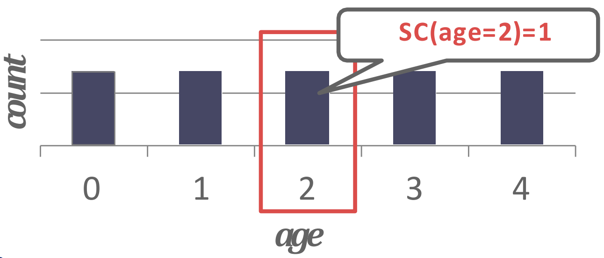
- 따라서 라는 predicate 을 들이밀었을 때 그것에 부합하는 tuple 은 1개이므로 는 가 되는 것.
Range Predicate
- 마찬가지로, 만약 uniform distribution 이라면 range predicate 의 를 계산하는 것도 한결 쉬워진다.
- 만약 라는 predicate 에 대해, unique value 중에서 보다 크거나 같은놈이 개라면, 다음과 같이 될 것이다:
- 예시로 이해하면 쉽다: 다음과 같은 histogram 이 있을 때
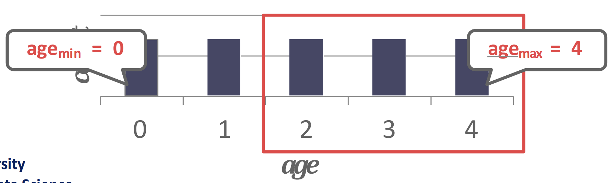
- 에 대해 2보다 크거나 같은놈이 3개 있고 모든 unique value 에 대한 count 가 로 동일하므로 이다.
Negation, Conjunction, Disjunction
- 보면 저 라는 놈이 “확률” 인 것을 알 수 있을 것이다.
- 따라서 Negation (
NOT ...), Conjunction (... AND ...), 그리고 Disjunction (... OR ...) 이 다음과 같이 계산되리라는 것을 알 수 있다.
Assumptions
- 위의 수식들에 대해서는 다음과 같은 가정이 있다:
- Uniform distribution: 위에서도 말한 대로, uniform distribution 이어야 해당 수식들이 들어맞는다.
- Independent predicates: 확률에서처럼 위의 수식들이 유도되었기에, 확률론에서 말하는 것처럼 쟤네들은 독립실행이어야 한다. 즉, attribute 들이 independent 해야 한다.
- Inclusion Principle: 사실 이건 뭔말인지 잘 모르겠음
Correlated Attributes
- 두 predicate 를 AND 하면 곱하여 sel 을 구할 수 있겠지만
- 두 predicate 의 attribute 들이 상관관계가 있으면 이 sel 은 틀리게 된다.
- 가령 accord 는 honda 에서만 출시되는 자동차 모델이기 때문에
- 이때의 sel 은 car_model 에 대한 sel 만으로 산정하는 것이 맞고
- car_maker 와 car_model 각각에 대한 sel 을 곱하여 산정하면 틀린 것
- 즉, car_model 을 알면 car_maker 가 특정되는 상황에서는 attribute 들이 independent 하지 않기 때문에 위 수식이 맞지 않게 된다.
Non-uniform Approximate
- 지금까지는 uniform distribution 을 가정했는데, 실제로는 당연히 그렇지 않다.
- 따라서 non-uniform distribution 을 생각해 보자.
- 여기서는 histogram 을 그릴 때, 각 unique value 에 대한 statistics 를 구하면 당연히 좋겠지만 그건 아무래도 힘드니까
- “Bucketing” 을 하고, 이 안에서는 uniform 하다고 가정하여 approximate 한 histogram 을 그려 를 추정하게 된다.
- Histogram 만 있으면 을 구하는건 쉽다.
- 컴퓨터가 계산하기 위한 알고리즘은 잘 모르겠지만 그래도 사람이 보고 계산하는 것은 쉬우니까 설명은 생략
Equi-width Histogram
- 전체 unique value range 를 등분해서 bucketing 하는 방법
- 그래서 bucket size 가 작을수록 정확해지긴 한다. 물론 overhead 가 있지만
- 가령 다음과 같은 histogram 을
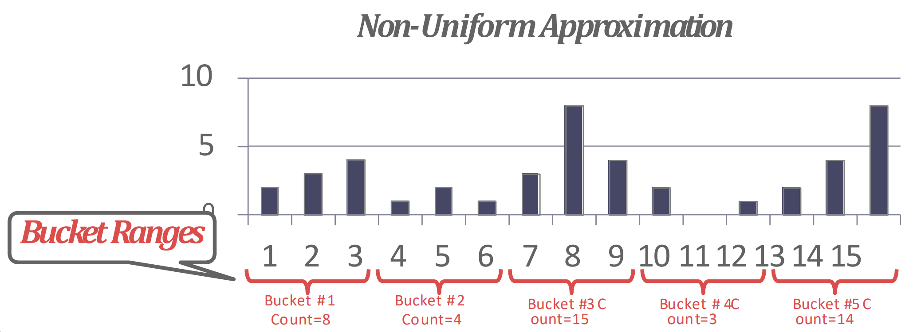
- 이렇게 approximate 하는 것이다:
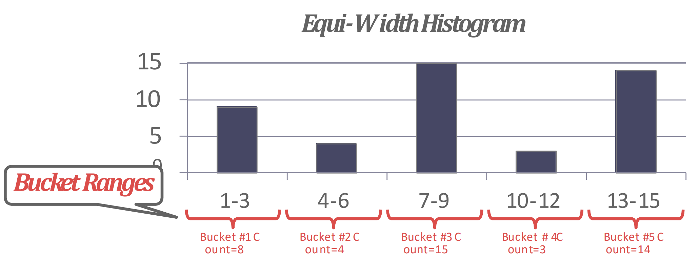
Equi-depth Histogram
- 이건 각 bucket 들의 count 가 균등해지도록 (1~2차이) bucket 의 range 를 다르게 가져가는 것을 말한다.
- 가령 다음과 같은 histogram 은
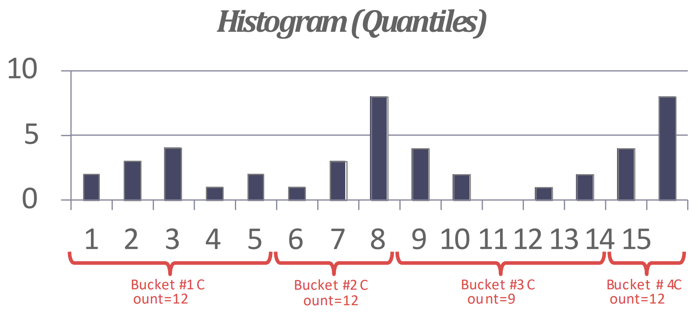
- 이렇게 approximate 된다.
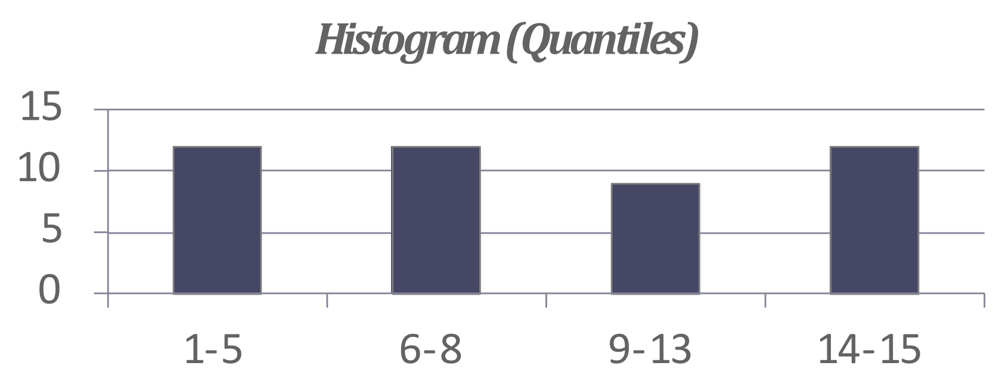
Sketching
- Sketch 라는 것은 histogram 처럼 probabilistic 한 정보를 담는 자료구조로, data set 에 대한 approximated statistics 를 제공해 준다고 한다.
- Histogram 을 sketch 로 교체해 estimation 의 정확성을 좀 더 높일 수도 있다고 하네
Sampling
- BtrBlocks 에서처럼 몇개를 랜덤추출해서 statistics 를 구하는 것을 말한다.
- Progressive sampling: 이전 query 에서의 statistics 결과를 계속 누적해서 점차 정확해지게 하는 것을 말한다.
- 참고로 이렇게 progressive 하게 진행하는 알고리즘을 emortization 라고 부른다.
Summary of Cost Estimation
- 간단라멘으로 요약하면 Cost 는 크게 physical, logical, algorithm 으로 나눌 수 있고
- Disk-based 에서 physical cost 에서는 IO 가 전부라고 했다.
- 그리고 logical cost 는 각 plan node 의 result size 를 selectivity 로 estimate 하는데
- 이때는 non-uniform 인 상황에 대해서 Equi-W Histogram, Equi-D Histogram, Sketch, 그리고 Sampling 등으로 distribuition 을 approximate 하여 를 구할 수 있다.
- 마지막으로 각 node 내에서의 computation overhead 를 algorithm cost 로 estimate 할 수 있다.
Plan Enumeration
- 그럼 cost 는 위에 소개한 방식으로 계산한다고 치고, 실질적으로 여러 plan 을 저 cost 로 비교하는 방법에 대해 알아보자.
- 여기서는 모든 plan 에 대해 비교하거나, 아니면 timeout 을 둬서 해당 timeout 까지 비교한 plan 들에 대해 가장 cost 가 적은 놈을 선택한다.
- 크게 (1) Single-relation, (2) Multi-relation, (3) Nested sub-query 로 경우의 수를 나눌 수 있다.
- 인데, (3) 은 안다루고 (1) 하고 (2) 에 대해서만 다루는듯 하다.
Single-relation Query
- Single relation access 를 하는 OLTP query 는 sequential, binary (clustered index), index search 중에서 heuristic 으로 골라서 사용해도 충분하다고 한다.
Multi-relation Query
- JOIN path 가 길어질수록 당연히 alternative plan 들도 많아진다.
- 이때 결정할 것은 다음의 3가지 이다:
- 어떤 순서로 JOIN 할 것이냐 (JOIN ordering)?
- 어떤 알고리즘으로 JOIN 할 것이냐 (NLJ, SMJ 등등)?
- 어떤 access method 를 사용할 것이냐 (sequential scan, index scan 등등)?
IBM System-R Approach
- 이 방법은 JOIN ordering 에만 연관이 있긴 한데, 이전의 System R 에서는 left-deep tree 의 원칙으로 plan 을 짠다고 한다.
- 가령 다음과 같은 세 plan 이 있을 때,
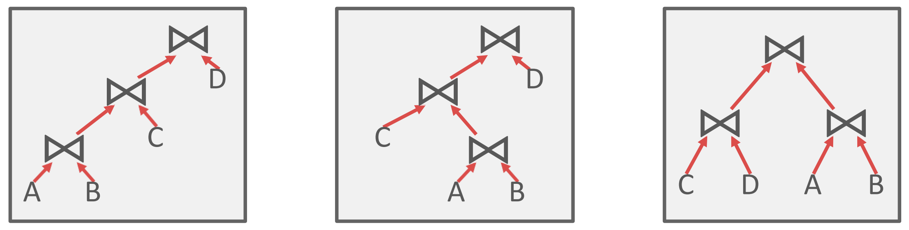
- 가장 왼쪽의 plan 을 선택한다는 것: 즉, 가장 왼쪽으로 skew 된 plan 을 선택한다고 생각하면 된다.
- 이렇게 하면 fully-pipelined plan 이 될 수 있다고 한다.
- 여기서 pipeline 은 volcano model 을 생각하면 될듯
- 뭐 child 의
next()를 차근차근 가져오는게 용이하다 정도로 이해하면 된다.
- 이 경우에는 plan 을 정확히 맞추지는 못하지만 어느정도 쓸만한 성능이 나온다고 한다.
- 다만 생각보다 모든 left-deep tree 가 fully-pipeline 인 것은 아니어서 요즘은 많이 안쓴다고 한다.
Dynamic Programming
- 또 다른 방법으로는 dynamic programming 으로 JOIN ordering 과 JOIN algorithm 을 구하는 것이다.
- 다음의 예시를 보자.
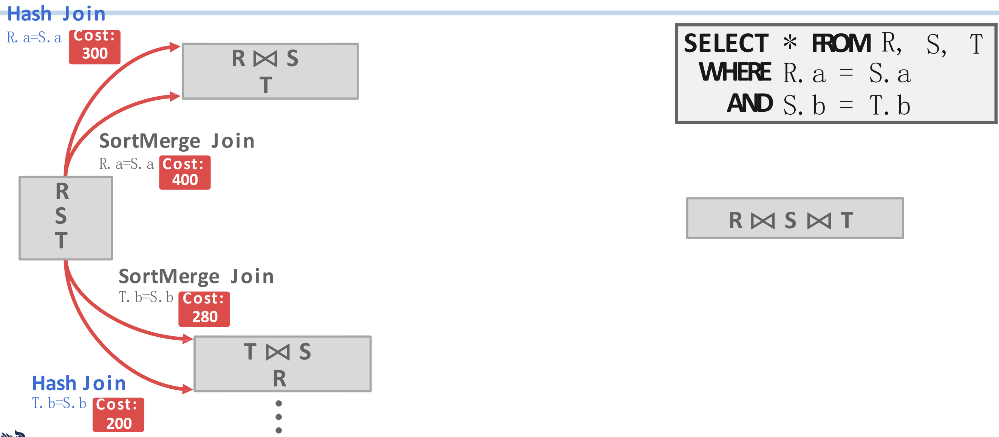
- 오른쪽의 SQL 을 참고하면, 우선 첫번째로 JOIN 하는 것은 이거나 일 것이다.
- 그리고 각각에 대해, HJ 및 SMJ 에 대한 cost 를 메겨 보면 위와 같이 된다고 해보자.
- 그럼 이때 path (빨간색 화살표) 는 4가지가 있다. 여기에서, 각 JOIN 순서에 대해 cost 가 적은 것을 택한다.
- 에 대해서는 HJ 가 더 cost 가 적으니까 이걸 선택하고, 에 대해서도 HJ 가 더 cost 가 적으니까 이걸 선택한다.
- 따라서 다음에는 이렇게 된다.
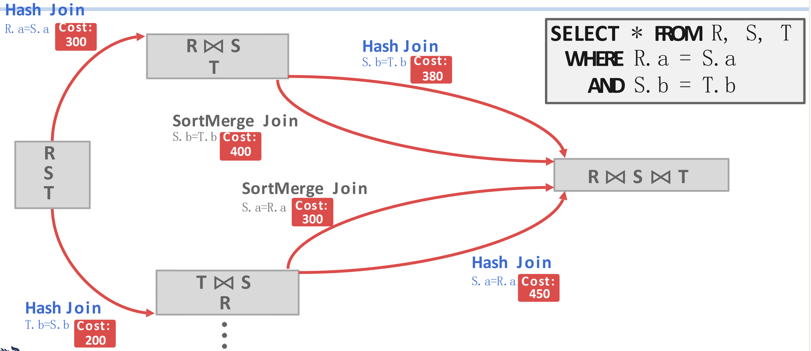
- 와 에 대한 JOIN algorithm 이 하나씩 정해진 것을 볼 수 있고,
- 이번에는 각각의 JOIN 에 대해 다음번의 JOIN 인 로 가는 path 도 2개씩 더 (총 4개 더) 있는 것을 볼 수 있다.
- 이때에도 마찬가지로 cost 가 적은 것을 고르면 에서는 HJ, 에서는 SMJ 가 선택된다는 것을 알 수 있다.
- 즉, 이렇게 되는 것
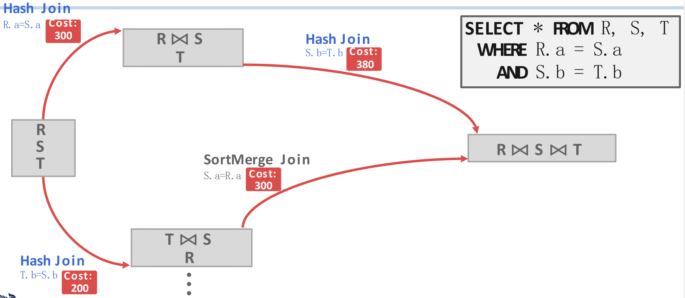
- 마지막으로 도합 cost 가 적은 path 를 선택하면 최종적으로 가 된다는 것을 알 수 있다.
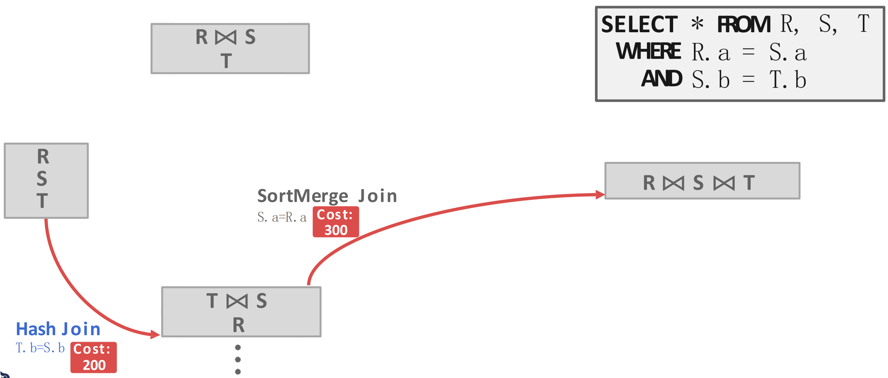
Candidate Plans
- 이게 아마 지금 MySQL 이 사용하고 있는 방법인것 같다.
- 우선 JOIN tree 를 모두 그려보고 그중에 하나를 고른다.
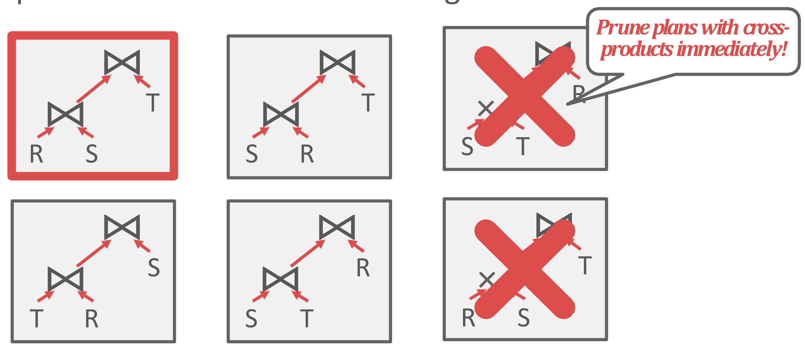
- 다음에는 각 JOIN 의 algorithm 을 고른다.
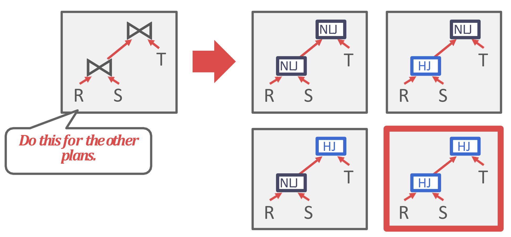
- 마지막으로는 access methods 를 결정하는 순서로 진행된다.
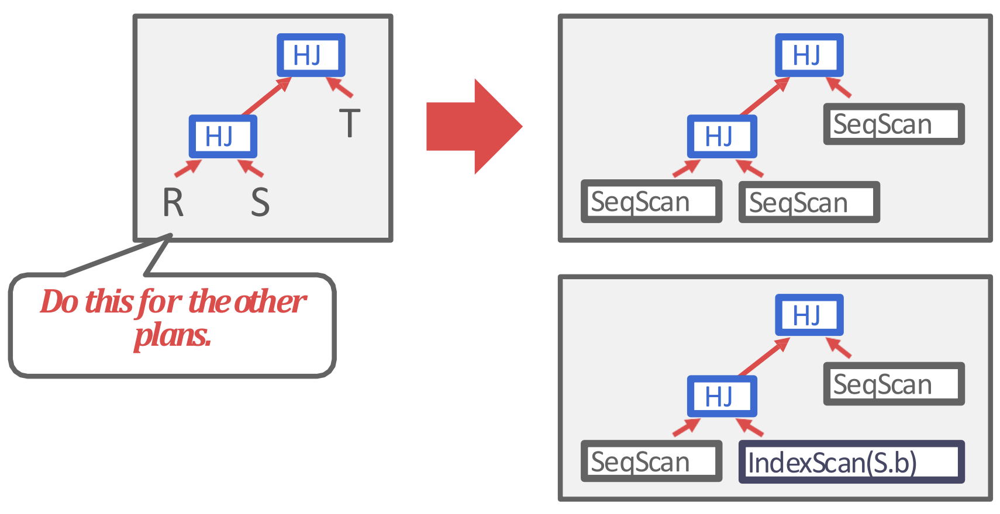
- 물론 이건 간단하게만 말한거고, 실제로는 훨씬 복잡하다고 한다.
PostgreSQL Genetic Optimizer
- PostgreSQL 에서는 query 에 관여하는 table 의 개수가 12 보다 작으면 그냥 dynamic programming 을 이용하지만, 12보다 커지면 Genetic Query Optimizer (GeQO) 를 사용한다고 한다.
- GeQO 에서는 plan tree 를 그려보고 cost 를 구해서 가장 worst 인 놈을 버리고 나머지 애들을 좀 변형시켜서 다시 cost 구해서 worst 를 버리는 식으로 진쟇된다.
- 즉, local min 을 구하는 것과 비슷한 과정으로 min cost 를 찾아가는 셈이다.
- 가령 예를 들면 1st generation 에서 plan 세개를 그리고, 이때의 최악인 첫번째를 거른다.
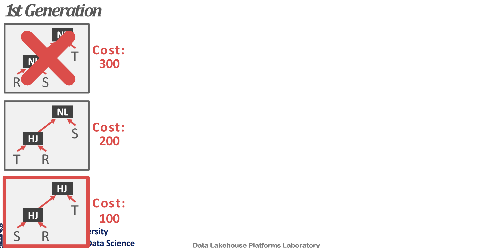
- 그리고 2nd generation 에서는 이전 query 를 변형해 plan 들을 만들고, 이때도 가장 안좋은 놈을 거른다.
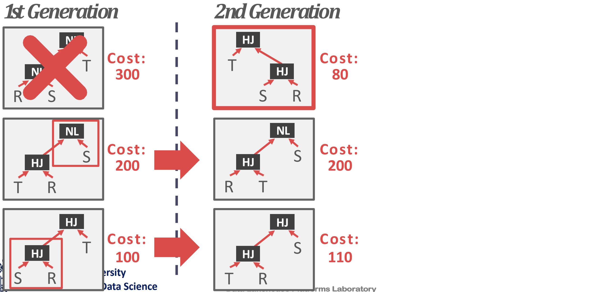
- 3rd generation 에서도 마찬가지다.
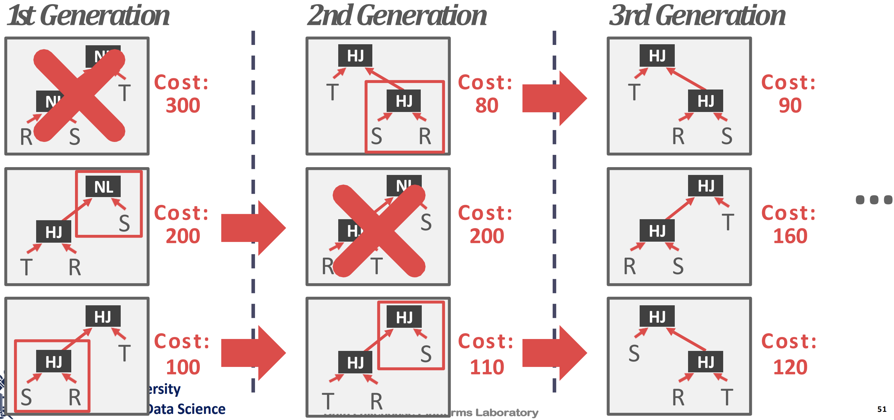
- 이런식으로 점차 구해나가는 방법을 이용한댄다.